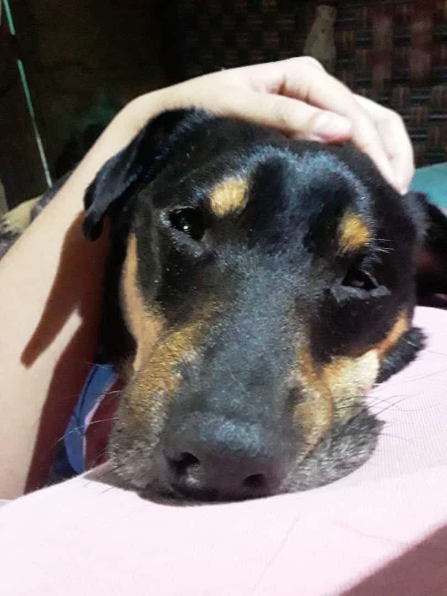

Linea de tiempo desde el 2019 hasta Hoy en Día
|
Secciones (Experiencia) |
|---|
|
---------------- Ir al año 2019 ------------- ---------------- Ir al año 2020 ------------- ---------------- Ir al año 2021 ------------- |
Nota: Esta pagina está dividida desde el 2019 hasta Hoy en día porque desde el 2019 él comenzo la secundaria y eso se considera un momento importante en su vida.
2019

La foto que ven arriba fue tomada en algún momento del 2019, en este año no paso casi nada importante, el perro y Junior se encariñan mas cada año que pasa, el niño pasó a sexto en el nuevo colegio, se cambiaron de casa, la hermana empezó un emprendimiento vendiendo helados a la salida del colegio donde estudia su hermano, nada mas fuera de lo común.
2020
.jpg)
.jpg)
Las fotos que se ves arriba son fotos tomadas en algún momento del 2020, este año fue bastante importante, a finales del 2019 se había descubierto una bolita en el cuello de nuestro chico, la mamá y él fueron al medico, los mandaron a chaparral, después a Bogotá y allá en un hospital llamado "Hospital Universitario San Ignacio" le diagnosticaron cáncer, tuvo 8 quimioterapias y 11 radioterapias y todo el tratamiento duró entre 7 y 8 meses, y durante todo ese tiempo la mamá y el chico vivían en la casa de su abuelo, pero la Experiencia allá no era muy satisfactoria. A final de año este chico guerrero después de ese tratamiento tan largo, le hicieron un examen el cuál salió positivo para cáncer, pero esta vez no en el cuello sino en el hígado. tras este tratamiento estuvo prácticamente todo el año en una nueva casa, también la llegada del covid hizo que el chico comenzara a estudiar virtual, en el mismo colegio claro, extrañó a su perrito bastante, a su familia y a sus amigos también.
2021 (Hoy en día)

La foto de arriba fue tomada el 21 de mayo del 2021, tras solo cinco meses de este año también ha sido importante, el covid arrasó en contagios el año pasado, pero a principios de este ya llegó la vacuna y tras cinco meses después Colombia no ha llegado ni a la mitad de la población vacunada, de hecho están haciendo protestas para cambiar este gobierno, lo cual ha sido un descontrol total. Con la enfermedad de nuestro chico lo remitieron a Cali para hacerle un tratamiento mas avanzado ya que el anterior no funcionó (dicen los doctores), tras solo UNA quimioterapia que duró tras DIAS en completarse, hicieron exámenes y descubrieron que esos tres DIAS valieron la pena, nuestro chico está curado y solo tiene controles virtuales con los doctores hoy en día. Pero no todo fue felicidad ya que al llegar de Cali se da cuenta que su perrito estaba enfermo de una enfermedad sin cura, el chico cayó devastado; cada día que pasaba el perrito se veía peor, no comía, no bebía agua, no jugaba, tenia mocos y lagañas por montones, etc. Hasta que la hermana de nuestro chico decidió no hacer sufrir mas a nuestro pequeño amigo y decidió hacerle la eutanasia. El perrito Black vivió 8 años de felicidad y el 14 de mayo del 2021 a las 7:21 PM, el perrito dejó de respirar.
